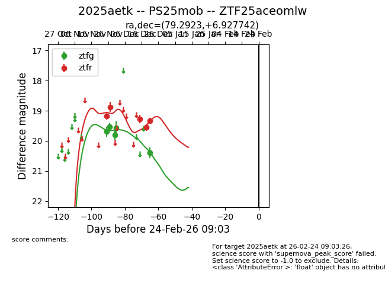
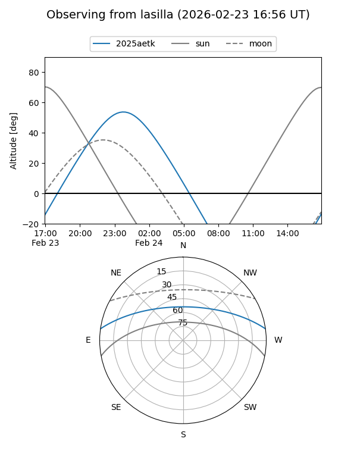
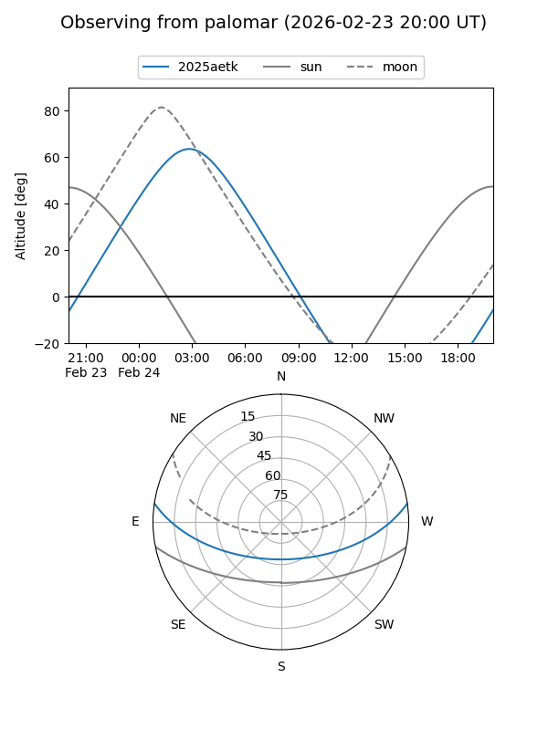
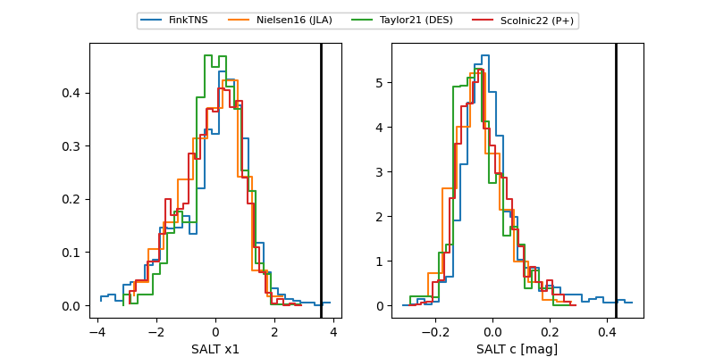

2025aetk
Target 2025aetk at 2025-12-21 09:08
Aliases and brokers:
FINK: fink-portal.org/ZTF25aceomlw
Lasair: lasair-ztf.lsst.ac.uk/objects/ZTF25aceomlw
ALeRCE: alerce.online/object/ZTF25aceomlw
TNS: wis-tns.org/object/2025aetk
YSE: ziggy.ucolick.org/yse/transient_detail/2025aetk
alt names
ZTF25aceomlw (ztf,fink_ztf)
2025aetk (tns,yse)
Coordinates:
equatorial (ra, dec) = 79.2923,+6.92774
equatorial (HMS+DMS) = 05:17:10.16,+06:55:39.87
galactic (l, b) = (195.3495,-17.35196)
Flags:
Photometry:
last ztfg=20.39, ztfr=19.33
5 ztfg, 5 ztfr detections
Lightcurve

Visibility


Additional plots
